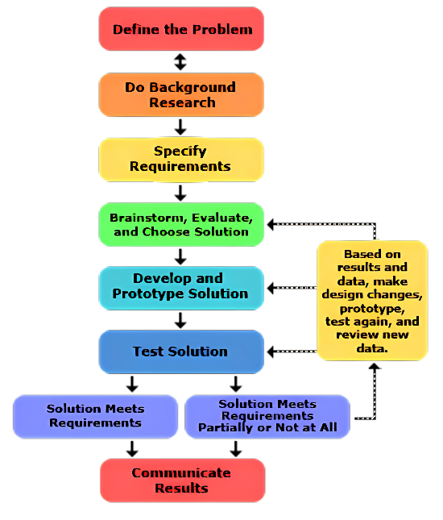

Journal Guide
Journal Guide Contents
Jump to a topic or exam preparation section.
Introduction
The journal is a simple yet really stressful exam for everyone. However, we believe that our guide can help you get accustomed to most questions and figure out how you can secure the highest grade possible.
امتحان الـ journal بسيط بس بيوتّر الكل جداً. ومع ذلك احنا شايفين إن الدليل ده ممكن يساعدك تتعود على أغلب الأسئلة وتعرف إزاي تضمن أعلى درجة ممكنة.
To fulfill any requirement regarding any type of work or exam, you must first understand what it is and what it requires.
وعشان تحقق أي متطلب في أي شغل أو امتحان، لازم الأول تفهم هو إيه وبيطلب إيه.
The journal’s questioning structure is divided into three main stems:
- Personal Reflection AND/OR Team Collaboration
- Engineering Design Process (EDP)
- Connection (or Learning Transfer)
In G10, each stem takes one question. For G11 & G12, the 4th question is another Connection question – all within the same 1h time constraint, and ~250 word-limit.
في الـ 10G، كل محور بياخد سؤال واحد. أما في الـ 11G و 12G سؤال الـ Connection بيتكرر مرتين. وقت الامتحان ساعة واحدة، والكتابة بحد أقصى حوالي 250 كلمة.
The grading of each question on the journal exam is structured as follows:
تقييم كل سؤال في امتحان الـ journal بيتم كالآتي:
Blue: exceptionally good answer; unpredictable by the teacher marking the questions and standing out among all the other students.
Blue: إجابة ممتازة استثنائية وغير متوقعة من وجهة نظر المصحح، وبتبرز وسط كل إجابات الطلبة التانيين.
Green: satisfactory answer, sufficiently answering each part of the question, as expected.
Green: إجابة مرضية، بتجاوب على كل جزء في السؤال بشكل كافي، زي المتوقع.
Yellow: insufficient answer; did not include all parts of the question, or the answer came in prematurely
Yellow: إجابة ناقصة؛ مش بتغطي كل أجزاء السؤال.
Red: blatantly wrong answer, AI-written answer, or completely unrelated to the question.
Red: إجابة غلط، أو إجابة مكتوبة بالـ AI، أو مالهاش علاقة بالسؤال خالص.
Note: Journal Grading can be very subjective, so your expected grade can vary wildly based on the teacher who graded your journal.
ملحوظة: تصحيح الـ journal ممكن يكون ذاتي جداً، فالدرجة اللي بتتوقعها ممكن تختلف بشكل كبير حسب المدرس اللي صحّح الـ journal بتاعك.
Personal Reflection & Team Collaboration
As much as the journal is an academic task, this question is intended to be personal and rather introspective about your own experience as a student. They want to see a human behaving and making decisions based on a number of factors.
على الرغم من إن الـ journal مهمة أكاديمية، السؤال ده مقصود بيه إنه يكون شخصي عن تجربتك كطالب. المصحح عاوز يشوف إنسان بيتصرف وبياخد قرارات بناءً على عوامل كتير.
For example, a capstone project is never perfect. Arguments between teammates, disagreements, and problems overall are very expected during your work. What matters here, is how you acted upon that. Did you try to solve a conflict between your teammates based on scientific reasoning? Did you try to motivate a teammate who’s lacking behind in studying or capstone projects, and what did you tell them?
مثالاً، مشروع الـ capstone عمره ما بيكون بيرفكت. الخناقات بين أعضاء التيم والاختلافات والمشاكل بشكل عام متوقعة جداً أثناء شغلكم. المهم هنا هو إنت اتصرفت إزاي. هل حاولت تحل خلاف بين زمايلك في التيم بالمنطق؟ هل حاولت تحفّز زميل متأخر في المذاكرة أو في الـ capstone، وقلتله إيه؟
Notice how personal these instances can get. Sure, the theme is related to the capstone or studying in one way or another, but it focuses on the human parts of working rather than anything else: a social issue, an experience, a piece of genuine advice, and so on.
لاحظ قد إيه المواقف دي ممكن تبقى شخصية. صحيح إن الموضوع مرتبط بالـ capstone أو المذاكرة بشكل أو بآخر، بس التركيز فيه على الجوانب الإنسانية في الشغل قبل أي حاجة تانية: مشكلة اجتماعية، تجربة، نصيحة حقيقية، وهكذا.
Learning to answer this question may not be very easy for everybody. It trains a very specific skill that you will inevitably need in the future: the ability to look inward and understand what’s there. This is not an innate skill, but rather a muscle to train.
كونك تتعلم ازاي تجاوب السؤال ده ممكن مايكونش سهل لبعض الناس. هو بيدرّب مهارة محددة جداً هتحتاجها حتماً في المستقبل: القدرة انك تفهم نفسك و دماغك شغالة ازاي و توصفهم كويس. حاجة زي دي مش قدرة بديهية بل مهارة ممكن أي حد يتدرب عليها.
Question: How do I practice self-reflective writing? I don’t know how to express myself very much, especially in English.
السؤال: إزاي أتمرّن على الـ Self-Reflective Writing؟ أنا مش بعرف أعبّر عن نفسي أوي، خصوصاً بالإنجليزي.
Answer (optional for improving on your own): Do journaling on your own – as an activity outside of school entirely. When you’re bored at night, open up the Notes app, or a blank sheet of paper, and write down how you feel in English.
Are you exhausted from studying? Write that.
Do you despise chemistry like everybody else? Include that too.
Emotional issues? Perfect. Write that down.
الإجابة (لو حابب تشتغل على نفسك): ابدأ تكتب Journal (مذكرات) لوحدك — كنشاط برة المدرسة خالص. لما تبقا قاعد زهقان، افتح الـ Notes، هات ورقة فاضية، واكتب بالإنجليزي إنت حاسس بإيه.
مخنوق؟ اكتب ده و حاول تكتب انت ليه مخنوق.
مش طايق الكيمستري زي باقي خلق الله؟ اكتبها برضه.
عندك مشاكل أو ضغوطات مأثرة عليك؟ حلو اوي.
Question: Where do I start?
سؤال: أبدأ منين؟
Answer: Read a few guides online under the titles “journaling” or “introspective writing”. What’s more important than simply reading, is actually writing.
Give it an attempt; nobody’s going to judge :)
Quick, helpful guide: https://ikario.com/introspective-writing/
إجابة: اقرا كام دليل على النت تحت عناوين زي “journaling” أو “introspective writing”. والأهم من القراية هو إنك تكتب فعلاً.
جرّب؛ محدش هيقولك لأ (:
Engineering Design Process
First of all, you should be aware of the Engineering Design Process (EDP) as a concept first.
أول حاجة، لازم تكون عارف الـ Engineering Design Process (EDP) كمفهوم الأول.
In short, it is a systematic, step-by-step thinking process that moves from problem-identifying to attempting a solution & documenting it at the very end. This is how any form of scientific advancement is made in any field: any research paper you’ll read will follow this methodology one way or another. Even in daily life, you’ll find yourself ALREADY following it.
باختصار، هي عملية تفكير منهجية خطوة بخطوة، بتنتقل من تحديد المشكلة لمحاولة الحل وتوثيقه في الآخر. وده بالظبط الطريقة اللي بيتم بيها أي تقدم علمي في أي مجال: أي research paper هتقراه هيمشي على المنهجية دي بشكل أو بآخر. وحتى في حياتك اليومية هتلاقي نفسك فعلاً ماشي عليها.
EDP is essentially just “thinking logically”.
Not thinking logically, or “jumping to conclusions”, is an example of NOT following the EDP. It’s as simple as that.
The EDP-themed question can be dissected into TWO layers:
- The step of EDP you’re working on (one of the colored blocks in the figure)
- The EXACT details of YOUR capstone project within THIS step of EDP.
Most of the work lies in the 2nd layer, actually.
سؤال الـ EDP ممكن يتحلل لطبقتين:
- خطوة الـ EDP اللي انت شغال عليها (واحد من البلوكات الملونة في الشكل)
- التفاصيل بالظبط لمشروع الـ capstone بتاعك جوه الخطوة دي من الـ EDP.
معظم الشغل بيبقى في الطبقة التانية فعلاً.

For example (just to make the idea clear):
- Your defined problem is desertification in Egypt.
- You’re at the [do background research] stage.
- You make a set of conclusions:
- Caused by climate change
- Caused by lack of water sources
- Caused by excessive land grazing of animals
مثلاً (بس عشان الفكرة توضح):
- المشكلة اللي حددتها هي التصحّر في مصر.
- انت في مرحلة [do background research].
- بتخرج بمجموعة استنتاجات:
- بسبب التغيّر المناخي
- بسبب قلة مصادر المياه
- بسبب الرعي الجائر بالحيوانات
The goal is to center your answer around your specific capstone project, and what you’ve done, or will do in the future. You will NOT explain the scientific basis of them in very much detail on the journal exam (remember that you only have ~250 words).
الفكرة الأساسية إن إجابتك تكون مركّزة على مشروع الـ Capstone بتاعك تحديداً، وعلى الحاجات اللي عملتوها بالفعل، أو اللي ناويين تعملوها بعدين. مش مطلوب منك تشرح الأساس العلمي للحاجات دي بالتفصيل الممل في امتحان الـ Journal؛ افتكر إن معاك حوالي 250 كلمة بس.
The structure of this question is not very predictable, but the only three ideas you need to focus on are those: EDP, your project, AND what you & your teammates are doing.
شكل السؤال مش ثابت ومش سهل تتوقعه، لكن في 3 حاجات بس لازم تركّز عليهم: الـ EDP، مشروعك، وإنت وزمايلك بتعملوا إيه.
Connection & Learning Transfer
The title of this question is self-explanatory, with a little bit of extra detail: connecting between the curriculum you study AND your capstone project. Oftentimes, a certain idea in your curriculum is introduced, and you’ll generally infer how this idea can be useful in the project.
السؤال ده واضح من اسمه، مع شوية تفاصيل زيادة: الربط بين المنهج اللي بتدرسه و مشروع الـ capstone بتاعك. في الغالب بتقدم فكرة معينة في المنهج، وانت بتستنتج إزاي الفكرة دي ممكن تفيد في المشروع.
Example:
- “Explain how [an idea] in thermodynamics has helped you shape your capstone project”.
- You’ll answer by saying that this lesson made you choose metal instead of plastic because it conducts heat better.
Following is a broad, exhaustive list of cases, for the connection question:
دي قائمة شاملة لكل الحالات اللي ممكن تقابلك في سؤال الـ Connection:
The idea in your curriculum may take multiple shapes or forms: The LO number (PH.1.04), or a concept inside an LO.
الفكرة اللي في الـ Curriculum ممكن تظهر بأكتر من شكل أو صورة: ممكن تكون رقم الـ LO، زي PH.1.04، أو Concept موجود جوّه الـ LO.
Most of the time, one connection question is tied to ONE subject.
في أغلب الحالات، سؤال Connection واحد بيكون مرتبط بمادة واحدة.
In Grade 10, the questions are broader; they hand you a concept and ask you to make a connection however you like, in Grades 11 and 12, the questions get very specific and provide a specific problem that needs solving using that concept.
في Grade 10، الأسئلة بتكون أوسع؛ بيدّوك Concept وبيطلبوا منك تعمل Connection بالطريقة اللي تشوفها مناسبة. أما في Grades 11 و 12، الأسئلة بتكون محددة أكتر، وبتديك مشكلة معينة لازم تحلها باستخدام الـ Concept ده.
In rare cases (especially in G11 & G12), the idea may not be tied to a specific LO number, or a subject. It can be a general academic idea.
في حالات نادرة، خصوصاً في 11G و 12G، الفكرة ممكن ما تكونش مرتبطة برقم LO معين أو حتى بمادة معينة. ممكن تكون فكرة أكاديمية عامة.
Example: Number of bacteria grows exponentially as time passes. This fits both biology and mathematics.
مثال: عدد الـ Bacteria بيزيد بشكل exponential مع مرور الوقت. الفكرة دي تنفع تتربط بالـ Biology وبالـ Mathematics في نفس الوقت.
The LO/concept/idea does NOT have to be linked to your project in reality. Your answer can be purely hypothetical.
الـ LO أو الـ Concept أو الفكرة مش لازم تكون مرتبطة بمشروعك فعلياً. إجابتك ممكن تكون افتراضية تماماً.
Example: The question’s theme is biology. Your project is electronics-based. Conceptual ideas can help with this:
مثال: لو موضوع السؤال هو الـ Biology ومشروعك معتمد على الـ Electronics، ممكن تعمل Connection بشكل افتراضي. مثلاً:
Cell organelles show an example of structure-fitting-function, the same way each component does a specific job on a microcontroller without wasting space or materials.
الـ Cell Organelles بتوضح فكرة إن الـ Structure بيكون مناسب للـ Function، بنفس الطريقة اللي كل Component في الـ Microcontroller بيكون له وظيفة محددة، من غير ما يهدر مساحة أو Materials.
Journal Exam Rules
Always write your answers as structured over 3-4 paragraphs. Avoid writing them in one block of text.
دايماً اكتب إجاباتك في شكل ٣–٤ فقرات منظمة. بلاش تكتب الإجابة كلها في Block واحد.
In the connection question, write down equations in subjects that allow you to do so (i.e., physics, chemistry, maths, etc..)
في سؤال الـ Connection، اكتب المعادلات في المواد اللي ينفع تستخدم فيها معادلات، زي الـ Physics والـ Chemistry والـ Maths وغيرها.
Tip: When writing the equations, do NOT use the equation tool in Microsoft Word. Upon returning to the Google Form, the equation will get scrambled anyway. Write the equations normally as follows: y=ax^2+bx+c.
نصيحة: لما تكتب المعادلات، ماتستخدمش Equation Tool في Microsoft Word. لما ترجع للـ Google Form، المعادلة ممكن تتلخبط. اكتبها بشكل عادي، زي: y=ax^2+bx+c
Keep the answers throughout the three/four questions in each journal exam consistent.
خليك محافظ على التناسق بين إجاباتك في الأسئلة التلاتة أو الأربعة في امتحان الـ Journal. يعني الإجابات كلها تكون ماشية مع بعض ومفيش تعارض بينها.
Time is a real constraint.
الوقت عامل مهم جداً.
MAKE SURE you only take 15 mins per question (for 3 questions) or 12-13 mins (for 4 questions). If you’re not done with the question, STOP and continue with the next question. This extra time will come in handy to:
اتأكد إنك ما تاخدش أكتر من ١٥ دقيقة لكل سؤال لو الامتحان فيه ٣ أسئلة، أو حوالي ١٢–١٣ دقيقة لكل سؤال لو فيه ٤ أسئلة. لو الوقت خلص ولسه ما خلصتش السؤال، وقف وانتقل للسؤال اللي بعده. الوقت اللي هتوفره هيفيدك في:
Go over incomplete answers
تراجع الإجابات اللي ما خلصتهاش.
Act quickly if the internet fails or the laptop disconnects
تتصرف بسرعة لو الإنترنت فصل أو الـ Laptop عمل Disconnect.
Cut down words if they go above the 250-word limit (The form will NOT accept submissions above the limit, so this is a REAL problem.)
تقلل عدد الكلمات لو الإجابة عدّت حد الـ ٢٥٠ كلمة. الـ Form مش هيقبل الإجابات اللي بتعدّي الحد، فدي مشكلة حقيقية.
Make sure you have auto-save on, and your laptop plugged to avoid disasters.
تتأكد إن الـ Auto-save شغال وإن الـ Laptop متوصل بالشاحن، عشان تتجنب أي Disaster.
Word count is a real constraint. (I know this sounds wild at the moments)
عدد الكلمات عامل مهم جداً برضه. عارف إن ده ممكن يبان غريب دلوقتي، بس إنك تعرف تعبّر عن فكرتك بأقل عدد ممكن من الكلمات مش مهارة بتكون موجودة عند كل الناس تلقائياً.
Articulating your ideas in the least number of words possible is also NOT an inherent skill. Train yourself to focus your answers on a limited number of ideas/events; often, 2-3 max is sufficient.
درّب نفسك إنك تركز إجابتك على عدد محدود من الأفكار أو الأحداث؛ غالباً فكرتين أو ٣ بالكتير بيكونوا كفاية.
In case you do go OVER the 250-word limit:
ولو لقيت نفسك عدّيت حد الـ ٢٥٠ كلمة:
If an idea can be removed without ruining the rest of your answer, delete immediately.
لو في فكرة ممكن تتشال من غير ما تبوّظ باقي الإجابة، امسحها فوراً.
Restructure sentences to take a lower number of characters.
أعد صياغة الجمل بحيث توصل نفس المعنى بعدد حروف أقل.
Use shorter words (i.e., ‘cozy’ instead of ‘comfortable’)
استخدم كلمات أقصر؛ مثلاً استخدم “cozy” بدل “comfortable”.
Tips for a Strong Journal
1. محدش يكتب paragraph طويل و مكركب، خاصة لو السؤال قال حاجة زي...
- “Mention 3…”
- “Outline 2…”
- “Identify 4…”
طريقة السؤال دي بتخلي المصحح يدور على نقط محددة مترقمة 1,2,3...
- Incorrect: “In our team, we communicated in many ways and solved problems and did everything and… (long, unorganized block of text)
- Correct: “As a team, we: 1. Organized tasks, 2. Communicated effectively (and so on – organized thoughts, easy to read)”
2. استخدم كلمات الـ LO أو الـ EDP بالحرف
المصحح في سؤال الـ EDP مستني يشوف منك استعمال لكلمات معينة بترتيب الـ EDP في شكل خطوات محددة خلال الإجابة: [Identify – Research – Prototype – Test - Evaluation]
نفس الشيء ينطبق على الـ Connection، لو جه السؤال يكلمك على موضوع معين، استعمل الكلمات اللي فالسؤال نفسه كـ Guide ليك في إجابتك:
- Question: Show how you enhanced collaboration.
- Incorrect: “We worked better as a group:”
- Correct: “We applied two collaboration strategies”
3. اقرأ السؤال كويس جداً جداً جداً
دي تقريباً نقطة ضعف عند %90 من الطلبة في أول كام جورنال: بتكتب إجابات ممتازة في حد ذاتها، بس بتبعد عن هدف السؤال.
➢ إزاي ممكن مدرس يرفض إجابة منطقية؟ ببساطة لأن الإجابة ضروري تستهدف السؤال بالظبط، فبالتالي إجابة متوسطة تستهدف السؤال أحسن 100 مرة عن إجابة ممتازة ولكن غير مناسبة للسؤال.
الفكرة انه يختبر قدرة فهمك للمطلوب من السؤال، و حركة زي دي تنقصك من المنطلق دا. فبالتالي، ياريت نلتزم بالكونسبت المطلوب لما السؤال يقول حاجة زي...
- “According to this LO…”
- “Using concept X in lesson Y…”
مهم جدًا نركز على اللي طلبه بس. يعني مش هنتكلم على LO تاني لأي سبب. حاول و اتدرب لحد ما تتقن إجابتك.
ممنوع:
- كلام فائض برة السياق
- شرح بحت لل LO بدون connection فعلي للcapstone
كل دي حاجات تدي المصحح انطباع سيء عن فهمك للسؤال، و بالتالي تترزع بسببها Green أو حتى Yellow على الرغم من مجهودك لأنه راح في اتجاه غلط.
4. سؤال الـ connection بيترتب على الوضع دة:
- الـ connection مش بنتكلم عن الـ LO كله فيه، فـ نضيع الـ250 كلمة كلهم، ولا بتكتب كلمتين و تخش على الرابطة على طول.
الـ structure بتاع الإجابة ممكن ترتبه زي ما وضحنا، و زي يناسب طريقة كتابتك. بالنسبة للمضمون العام:
أول حاجة: اشرح الـ concept المعروض قدامك باختصار، حدد النقط المعينة اللي هتتكلم عنها فالكونسبت
تاني حاجة: أتكلم عن الرابطة بالبروجكت بتاعك، لو استعملت formulas أو equations اكتبها و وضح الـ variables فيها
تالت (و أهم حاجة): أتكلم عن تطبيق الرابطة دي فعلياً في البروجكت على أرض الواقع، يعني الـ formula المعينة هتشرح ازاي استعملت نتائجها فيما بعد، و هكذا.
5. حاول تعلّي على السؤال في إجابتك
دي نصيحة عن تجربة لينا و لزملائنا للي عاوز يوصل بمستواه للـ Blue في إجاباته بشكل شبه مستمر.
أي هي؟ انك تضيف حاجة في الإجابة زيادة عن المطلوب في السؤال. و هنا مثال:
- سؤال Personal reflection: الترم التاني، و معاك تيم جديد، اشرحلي تغييرين انت اضطريت تواجههم اختلفوا عن التيم بتاعك من الترم اللي فاتت.
“THIS IS A NEW SEMETSER WITH A NEW TEAM; DETERMINE TWO CHANGES THAT YOU FACED IN DEALING WITH YOUR RECENT TEAM DIFFER FROM YOUR FIRST TEAM IN G10 SEMESTER 1”
الإجابة المتوسطة اللي يادوب تكفى السؤال هيكتب إجابة generic ب intro و يختم ب conclusion عادية، حاجة زي “Teamwork in STEM is great for me” و بالتالي شيء طبيعي يتصحح كـ Green.
لازم نفتكر ان تصحيح الـ Blue فقط للإجابات الممتازة والغير متوقعة، مش الإجابات الصحيحة أو الكافية فقط، يعني لو الـ Green هي 100% فبالتالي الـ Blue هي 110%.
STEM’s teamwork system is very unique and requires flexibility to tend to your team’s needs, but over the year, teams have changed; thus, I need to get accustomed to their new methods and habits. Two changes that affected how I dealt with my team after changing were:
1. Changes in my sleep schedule: back in G10, my teammates and I had the same sleep schedule, which meant that agreeing upon task deadlines and team meeting times was easy; however, this semester, I found out that 2 out of my team members like to take naps in the day and continue working at night. At the start of the semester, we couldn’t agree upon when we would meet to discuss our business, nor when tasks would be handed in… so we solved this problem by agreeing upon two things:
- Carrying out online meetings during the holidays when we are apart and at home; this method kept our sleep schedules unaffected by meetings because life at home is much more flexible than in the dorm.
- Creating a shared online cloud, this way, any team member can hand in their task effectively, regardless of the time and their location.
2. Method of work: Me and my old G10 team were pretty coherent in the way we wrote down our tasks, which made it easier for us to complete each other's tasks, but this semester, my new team wasn’t used to my formatting and narrative methods, which sometimes confused them when tasks were shared, but we agreed to solve this problem by setting a certain rubric that we all agreed upon for us to follow, this way sharing tasks is much more efficient because my teammates’ tasks feel just like mine when I edit them. "
طيب مين الشاطر اللي يقول الزيادة هنا فين...؟
الإجابة هنا فيها: الاختلافين اللي الطالب واجههم + الحلول اللي طبقها للتأقلم معاها، دي حاجة زيادة مش مطلوبة في السؤال. لما المصحح يشوف الإجابة دي انت بالنسبة له:
- مرتب
- مجاوب كل المضمون
- ضايف حلول زيادة
- عملت كل دة في 250 كلمة
دي أسباب قوية جداً تخليك تجيب Blue. بس برضو، يلا ناخد مثال تاني.
THIS IS YOUR THIRD CAPSTONE CHALLENGE; THEREFORE, YOU SHOULD USE YOUR VALUABLE EXPERIENCE IN PROBLEM-SOLVING BY NOW TO FACILITATE A CLEAR PATH TO THE SOLUTION, OUTLINE THREE CRITICAL POINTS THAT NEED TO BE FOLLOWED TO REACH THE SOLUTION EASILY.
The first two capstone challenges taught me how to be organized and perform correct research. This year’s challenge was no exception, as it demands a new solution, and a new solution requires correct steps to be effective, such as:
1. Clear identification for the problem: knowing exactly what you are trying to solve gives you a clearer idea of what to do, and what to search for, while allowing you to fully grasp why and how to solve the problem.
2. Valid research: Many people jump to conclusions when solving a problem; instead, what my team does is research the problem thoroughly. This way, we make sure the solution tends to the needs of the problem rather than just being convenient.
3. Clear communication with the team: Communicating with the team facilitates teamwork and saves time and effort. I find my team to be pretty straightforward on when to hand in tasks and what they should look like. For example, in a recent interaction with one of my teammates we were talking about a research task, and I told him that when he hands it in, it needs to be cited, if I hadn’t told him, then he would have handed it in without citation, and would have had to redo the task, and that is a major inconvenience and waste of time.
4. Understanding prior solutions: knowing what has been done before, and what worked and what failed, saves a lot of time and effort and is a great method for avoiding mistakes that were already committed in the past.
These 4 methods not only make reaching the solution easier, but also ensure a highly effective solution.
هنا، الإجابة بدأت ب intro صغيرة كـ نوع من التمهيد عشان يوزع التلات نقط اللي طلبها... بس الإجابة فيها اربع نقاط...؟ بالظبط، رغم ان السؤال طلب 3.
مهم تاخد بالك ان الإجابة بتستعمل بشكل واضح جداً structure الـ EDP و بالترتيب. النقط كلها (ماعدا التالتة) تابعين للـ EDP و بيوضحوا شكل الخطوة بعينها في بروجكت الطالب في حد ذاته:
- الإجابة بدأت بالـ Identification اللي هي أول خطوة في الـ EDP.
- بعدين نقل على الـ Research، تاني خطوة EDP.
- بعدين في نقطة رقم أربعة أتكلم عن استفادته من الـ Prior solutions، اللي هي تالت خطوة EDP.
ايه الفكرة؟ كان ممكن يكتب 3 نقط، بس الفرق من الـ green للـ blue هي ان الإجابة تظهر فهم الطالب للـ EDP بدون رغي أو مجرد شرح عقيم للـ EDP دون استعمال.
بس كدا، دي كل حاجة لازم تاخدوا بالكم منها. النقط دول بيفرقوا بين الـ Green و Blue، ولكن دي مجرد إرشادات عامة بننصح بيها لكن متضمنش الدرجة 100%:
1. خلي كلمك precise أو دقيق اكتر، مش vague
- Incorrect: “We had many problems in communication…”
- Correct: “We missed a deadline because of miscommunication between two members on the meeting time”
- Incorrect: “All teams have communication issues…”
- Correct: “Our team kept mixing up deadlines at the start of the project…”
2. استخدم شكل Effect & Cause في كتابتك
- Incorrect: “We used masks.”
- Correct: “Since cutting wheat straw creates dust, we used masks.”